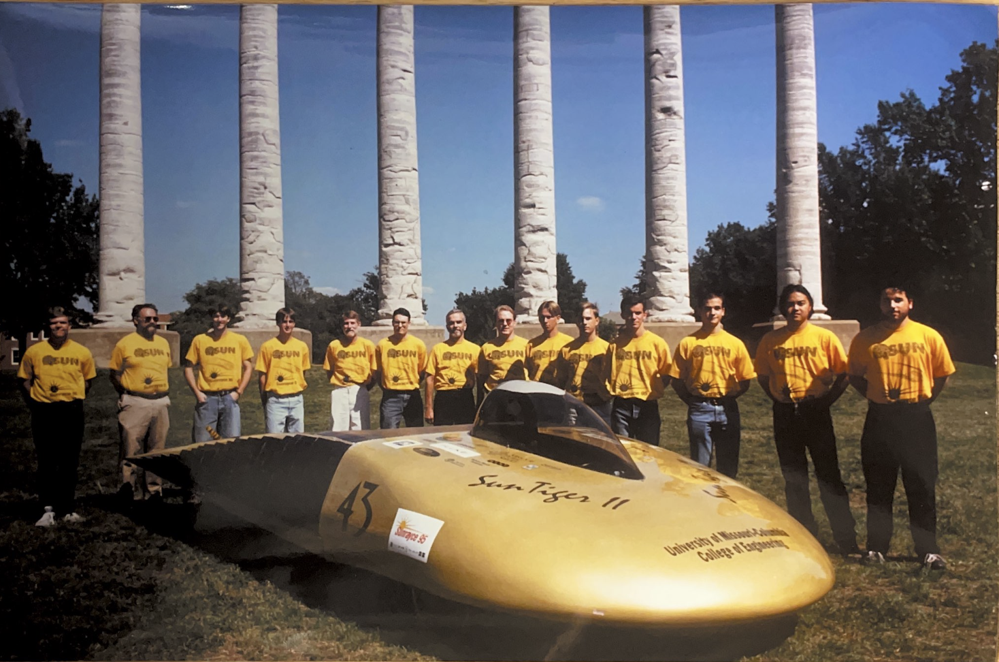
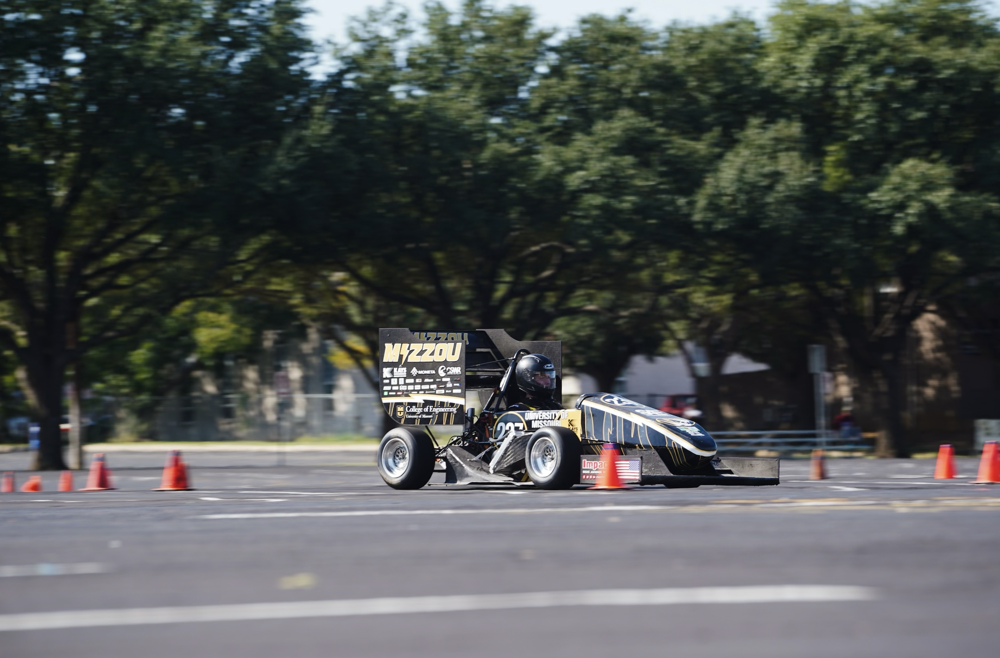

SOLAR CAR
HYDROGEN CAR

CAR #237
CAR #216
Mizzou Electric Racing, previously known as Mizzou Eco Racing, has been a university organization since 19XX.
During its tenure, the Eco Racing team was involved in building solar cars, hydrogen cars, and an electric
conversion of a Chevy S10.
The Solar Car competed annually in the American Solar Challenge, also known as
“Sunrayce,” where cars raced from Chicago to Los Angeles over a 10-day period. Mizzou Eco Racing transitioned to
building hydrogen cars in 20XX, competing in the Shell Eco-Marathon from year to year, and in 2017, they successfully
converted a Chevy S10 into an electric vehicle.
In 2022, Mizzou Eco Racing became Mizzou Electric Racing. Together
with Mizzou Racing, we moved from the basement of Naka Hall into a new shop in Lafferre Hall. In the same year, we
began the joint manufacturing of Mizzou’s very first Formula SAE Electric Vehicle.